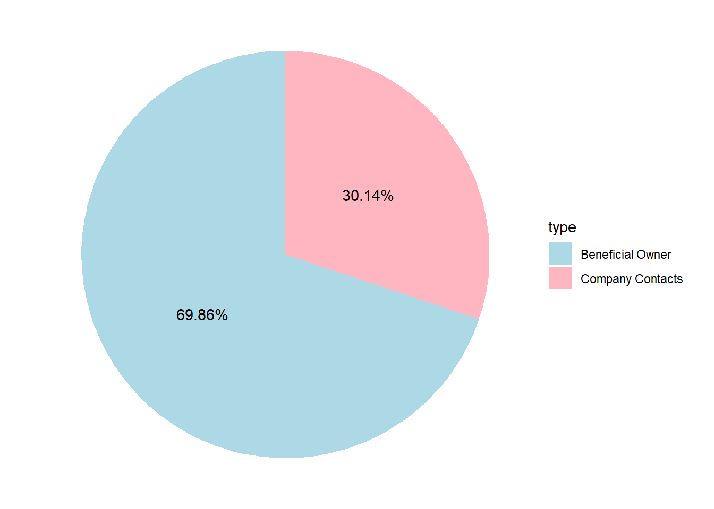
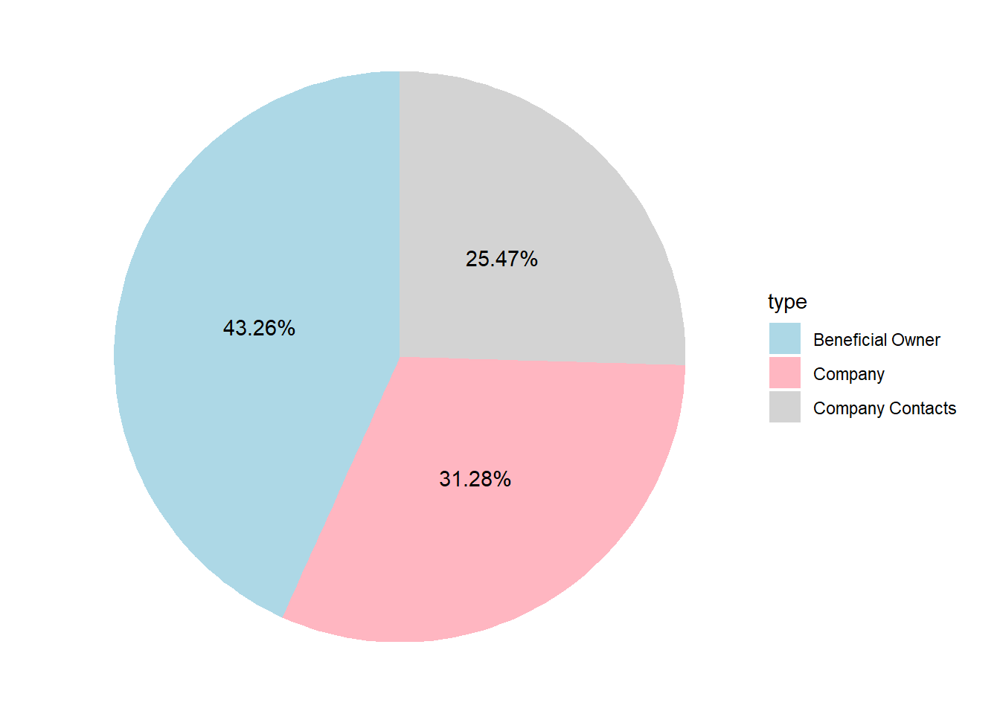
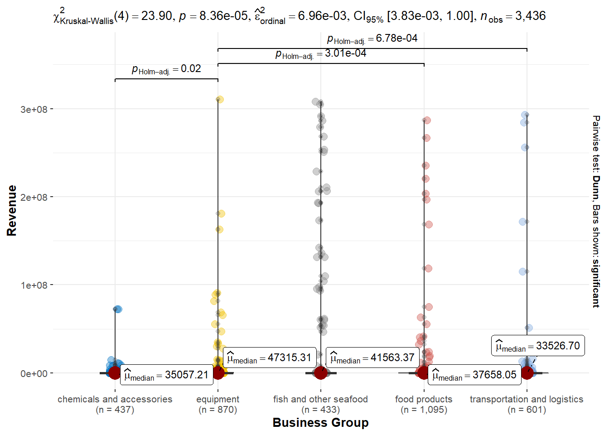
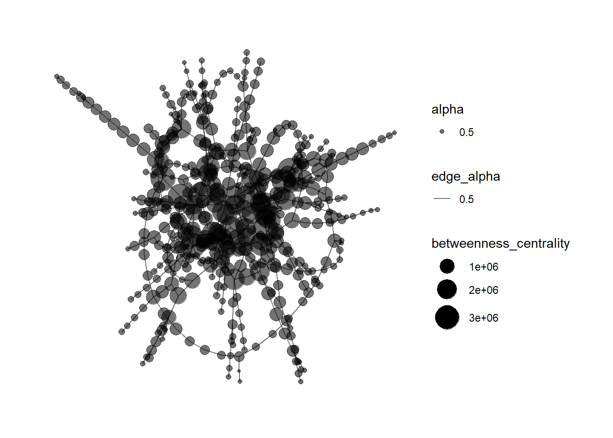
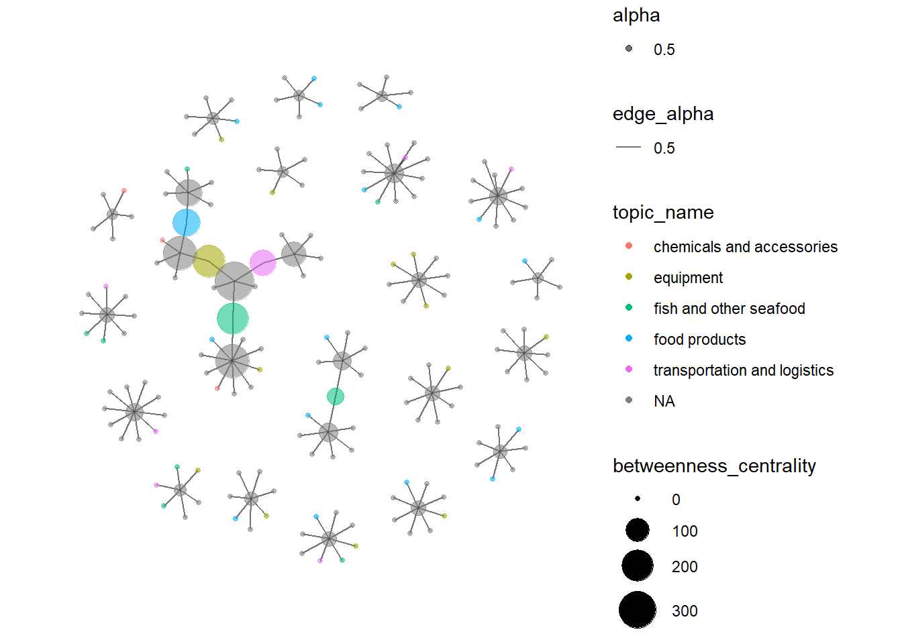

pacman::p_load(jsonlite, tidygraph, ggraph,
visNetwork, graphlayouts, ggforce,
skimr, tidytext,tidyverse,topicmodels,tm,plotly,ggstatsplot,rstantools,PMCMRplus)Take-home_Ex3
Take home exercise 3
The task
With reference to Mini-Challenge 3 of VAST Challenge 2023 and by using appropriate static and interactive statistical graphics methods, you are required to help FishEye identify companies that may be engaged in illegal fishing. (website: https://vast-challenge.github.io/2023/MC3.html)
Question chosen: Develop a visual analytics process to find similar businesses and group them. This analysis should focus on a business’s most important features and present those features clearly to the user.
Data Pre-processing
- load packages and dataset
mc3_data <- fromJSON("data/MC3.json")- extract edges from JSON
mc3_edges <- as_tibble(mc3_data$links) %>%
distinct() %>%
mutate(source = as.character(source),
target = as.character(target),
type = as.character(type)) %>%
group_by(source, target, type) %>%
summarise(weights = n()) %>%
filter(source!=target) %>%
ungroup()- extract nodes from JSON
mc3_nodes <- as_tibble(mc3_data$nodes) %>%
mutate(country = as.character(country),
id = as.character(id),
product_services = as.character(product_services),
revenue_omu = as.numeric(as.character(revenue_omu)),
type = as.character(type)) %>%
select(id, country, type, revenue_omu, product_services)- Display the proportion of mc3_edges types (Beneficial owner and Company contacts)
Show Code
# Calculate the count of X by Category
edge_type_summary <- mc3_edges %>%
group_by(type) %>%
summarise(Count = n())%>%
ungroup()
# Create pie chart using ggplot
chart <- ggplot(edge_type_summary, aes(x = "", y = Count, fill = type)) +
geom_bar(stat = "identity", width = 1) +
coord_polar("y", start = 0) +
theme_void() +
scale_fill_manual(values = c("lightblue", "lightpink")) +
geom_text(aes(label = paste0(round(Count/sum(Count)*100,2), "%")), position = position_stack(vjust = 0.5))
chart
- Recoding “character(0)” to “others” in product_services field for all nodes.
#recode nodes with product_services is character(0)
mc3_nodes$product_services <- ifelse(mc3_nodes$product_services == "character(0)", "others", mc3_nodes$product_services)- Display the proportion of mc3_nodes types (Beneficial owner/Company contacts/Company)
Show Code
# Calculate the count of X by Category
node_type_summary <- mc3_nodes %>%
group_by(type) %>%
summarise(Count = n()) %>%
ungroup()
# Create pie chart using ggplot
chart2 <- ggplot(node_type_summary, aes(x = "", y = Count, fill = type)) +
geom_bar(stat = "identity", width = 1) +
coord_polar("y", start = 0) +
theme_void() +
scale_fill_manual(values = c("lightblue", "lightpink","lightgrey")) +
geom_text(aes(label = paste0(round(Count/sum(Count)*100,2), "%")), position = position_stack(vjust = 0.5))
chart2
Nodes Grouping by Using Topic Modelling
- Perform basic text analysis preprocessing (change to lowercase, remove punctuation, remove numbers, remove stopwords) and create a document-term matrix after that. Nodes with “others” and “Unknown” product services are excluded from this text analysis section.
# Create a corpus from product_services
mc3_nodes <- mc3_nodes %>%
filter(!product_services%in% c("others", "Unknown"))
print(paste(length(mc3_nodes$id)," nodes left in the dataset."))[1] "4018 nodes left in the dataset."#create a corpus object
corpus <- Corpus(VectorSource(mc3_nodes$product_services))
# Perform basic preprocessing (lowercase, remove punctuation, remove numbers, remove stopwords)
corpus <- tm_map(corpus, removeNumbers)
corpus <- tm_map(corpus, content_transformer(tolower))
corpus <- tm_map(corpus, removePunctuation)
corpus <- tm_map(corpus, removeNumbers)
corpus <- tm_map(corpus, removeWords, stopwords("english"))
# Create a document-term matrix
dtm <- DocumentTermMatrix(corpus)- LDA topic modelling (limited to 5 topics)
# Fit the LDA model
lda_model <- LDA(dtm, control=list(seed=1), k = 5) - Display the top 7 terms for each of the topic
Show Code
# Retrieve the top 7 terms for each topic
topics <- terms(lda_model, 7)
# Display the topics and associated terms
for (i in 1:5) {
cat("Topic", i, ":", paste(topics[,i], collapse = ", "), "\n")
}Topic 1 : services, freight, transportation, logistics, source, freelance, researcher
Topic 2 : fish, salmon, products, frozen, tuna, shrimp, squid
Topic 3 : products, shoes, footwear, chemicals, oil, apparel, well
Topic 4 : products, equipment, materials, systems, parts, machines, steel
Topic 5 : products, seafood, fish, food, frozen, fresh, related From the top terms of each topic, we can easily summarize the respective business feature for the groups as below:
Topic 1: transportation and logistics
Topic 2: fish and other seafood
Topic 3: chemicals and accessories
Topic 4: equipment
Topic 5: food products
- Map the topics back to the nodes table as their groups.
Show Code
#extract the probability for each topic
doc_topic_probs <- as.data.frame(topics(lda_model))
# Map topics back to documents
mapped_nodes <- cbind(mc3_nodes, doc_topic_probs) %>%
rename_with(.col=6, ~"topic")%>%
mutate(topic = as.character(topic))
#recode topic names
mapped_nodes$topic_name <- case_when(
mapped_nodes$topic == 1 ~ "transportation and logistics",
mapped_nodes$topic == 2 ~ "fish and other seafood",
mapped_nodes$topic == 3 ~ "chemicals and accessories",
mapped_nodes$topic == 4 ~ "equipment",
TRUE ~ "food products"
)- Visualize the business group (topics) distribution for each node type.
The bar chart below shows the topic distribution for each type of nodes.
For beneficial owner, none of them are grouped under “chemicals and accessories”. Majority of them are doing fish and seafood related business.
Companies that are grouped under equipment and food products are more than the other three businesses.
For company contacts, there is only one record left. As company contacts should represent his company, its business feature is not meaningful in this context.
Show Code
# Calculate the count of nodes by type
topic_dist <- mapped_nodes %>%
group_by(type, topic_name) %>%
summarise(Count = n()) %>%
ungroup()
# Create the bar chart
p <- ggplot(topic_dist, aes(x = topic_name, y = Count, fill=type)) +
geom_bar(stat = "identity", position = "dodge") +
facet_wrap(~ type, scales = "free_y") +
xlab("") +
theme(axis.text.x = element_text(angle = 60, hjust = 1))
ggplotly(p)- Explore the average revenue for each business group.
Equipment business group has the highest mean revenue, followed by fish and other seafood products.
Show Code
ggbetweenstats(
data = mapped_nodes,
x = topic_name,
y = revenue_omu,
xlab = "Business Group",
ylab = "Revenue",
type = "np", #conduct non-parametric test
conf.level = 0.95,
mean.ci = TRUE,
package = "ggsci",
palette = "default_jco"
) 
Network Visualisation and Analysis
- For a quick overview, build the network model with tidygraph.
Show Code
#create an updated unique node list from the edge list
id1 <- mc3_edges %>%
select(source) %>%
rename(id = source)
id2 <- mc3_edges %>%
select(target) %>%
rename(id = target)
mc3_nodes1 <- rbind(id1, id2) %>%
distinct() %>%
left_join(mc3_nodes,
unmatched = "drop")
#build graph object and calculate centrality measures
mc3_graph <- tbl_graph(nodes = mc3_nodes1,
edges = mc3_edges,
directed = FALSE) %>%
mutate(betweenness_centrality = centrality_betweenness(),
closeness_centrality = centrality_closeness())
#plot the network only for nodes with betweenness >=100000
mc3_graph %>%
filter(betweenness_centrality >= 100000) %>%
ggraph(layout = "fr") +
geom_edge_link(aes(alpha=0.5)) +
geom_node_point(aes(
size = betweenness_centrality,
alpha = 0.5)) +
scale_size_continuous(range=c(1,10))+
theme_graph()
- The plot is very dense, thus we want to zoom in to a smaller group for further analysis.
A person who owns many companies are more suspicious than others. The next step is to detect such anomalies by focusing on the beneficial owners who have >= 5 companies.
Show Code
#filter out beneficial owner only, and summarize their number of company ownership
owner_freq <- mc3_edges %>%
filter(type == "Beneficial Owner") %>%
group_by(target) %>%
summarise(companies_owned=n()) %>%
arrange(desc(companies_owned)) %>%
filter(companies_owned >1) %>%
ungroup()
#bar plot for company ownership count
owner_freq_gg <- ggplot(data = owner_freq,
aes(x = companies_owned)) +
geom_bar()+
xlab(NULL) +
coord_flip() +
labs(x = "num of companies ownered",
y = "Frequency",
title = "company ownership distribution")
ggplotly(owner_freq_gg)Edges for targets with exactly one ownership have already been eliminated (they are less suspicious too). Based on the distribution plot, I will set the threshold at 5 (inclusive), in order to focus on the tail for further analysis.
Suspicious target person who owns more than or equal to 5 companies:
Show Code
owner_freq_reduced <- owner_freq %>%
filter(companies_owned >= 5)
DT::datatable(owner_freq_reduced)- Network visualization of beneficial owners with more than 5 companies. Node size represents betweenness centrality, color represents the business group (grey means its product_services is not available).
Show Code
#set random seed
set.seed(12)
#filter out edges with the suspicious beneficial owner only
sub_edge <- mc3_edges %>%
filter(target %in% c(owner_freq_reduced$target))
#create an updated unique node list from the edge list
id1 <- sub_edge %>%
select(source) %>%
rename(id = source)
id2 <- sub_edge %>%
select(target) %>%
rename(id = target)
sub_node <- rbind(id1, id2) %>%
distinct() %>%
left_join(mapped_nodes,by = "id",unmatched = "drop")%>%
distinct(id,.keep_all = TRUE)
#build graph object and calculate centrality measures
mc3_graph <- tbl_graph(nodes = sub_node,
edges = sub_edge,
directed = FALSE) %>%
mutate(betweenness_centrality = centrality_betweenness())
#plot the network
mc3_graph %>%
ggraph(layout = "fr") +
geom_edge_link(aes(alpha=0.5)) +
geom_node_point(aes(
size = betweenness_centrality,
color = topic_name,
alpha = 0.5)) +
scale_size_continuous(range=c(1,10))+
theme_graph()
- Now let us use VisNetwork to make it an interactive plot (company is marked in star).
Show Code
#plot visnetwork graph - first need to change column name
sub_edge <- sub_edge %>%
rename(from = source) %>%
rename(to = target)
#set random seed
set.seed(12)
#store betweenness values
betweenness_values <- mc3_graph %>%
pull(betweenness_centrality)
#store attributes with respective column name that is readable by visnetwork
sub_node$group <- sub_node$topic_name
sub_node$value <- betweenness_values
sub_node$shape <- ifelse(sub_node$type=="Company","star","dot")
sub_edge$value <- sub_edge$weights
visNetwork(sub_node,sub_edge) %>%
visIgraphLayout(layout = "layout_with_fr") %>%
visOptions(highlightNearest = TRUE,nodesIdSelection = TRUE,selectedBy = "topic_name") %>%
visGroups(groupname = "food products", color = "orange") %>%
visGroups(groupname = "fish and other seafood", color = "red") %>%
visGroups(groupname = "transportation and logistics", color = "lightgreen") %>%
visGroups(groupname = "equipment", color ="purple") %>%
visGroups(groupname = "chemicals and accessories", color = "yellow") %>%
visLegend(position = "right")By applying LDA topic modelling on the product service attribute, I successfully identified the most important business feature for each node and grouped them based on similar business (5 groups). (The nodes with unavailable product_service data are in blue.) From the network, we can observe that usually there are more than one types of business within each small cluster, which is expected because a business chain usually involves more than one type of products/services.
FishEye has determined that companies with anomalous structures are far more likely to be involved in IUU (or other “fishy” business). From the network graphs above, we can clearly observe a big cluster which is suspicious. Each beneficial owner in this cluster owns >=5 companies. This cluster includes several high betweenness nodes as well. Beneficial owner “Jessica Brown” is the essential linkage in this cluster. Therefore her 1-hop neighbouring companies are likely to be involved in IUU fishing too, such as: - BlueTide GmbH & Co. KG - Mar del Oeste - - West Fish GmbH Transport
Besides, there is another company from this cluster named “Nagaland Sea Catch Ltd. Liability Co Logistics” also has high betweenness, as it links two major beneficial owner David Thomas and Mary Williams. This company might also involve in IUU fishing.